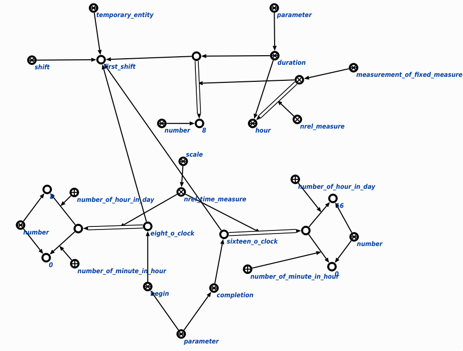

поиск временных границ указанной временной сущности предназначена для поиска временных границ указанной временной сущности. Первым и единственным аргументом запроса является временная сущность. Пример поиска временных границ указанной временной сущности:
